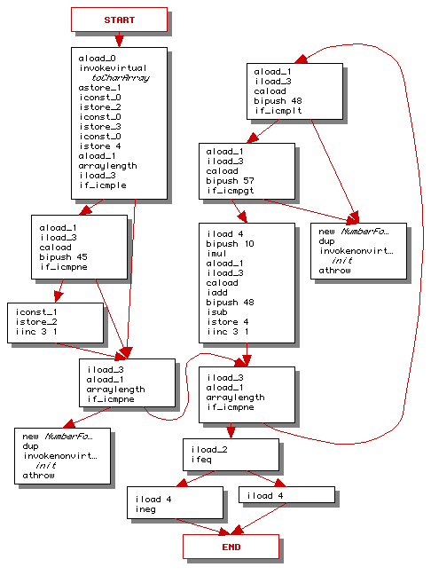
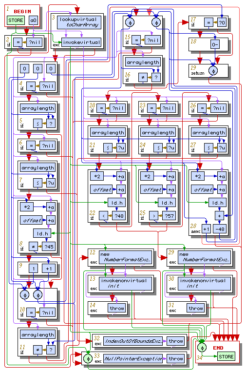
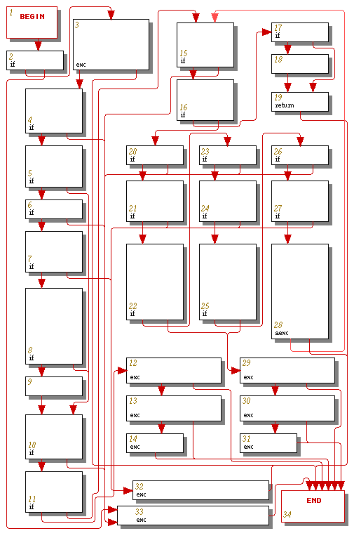
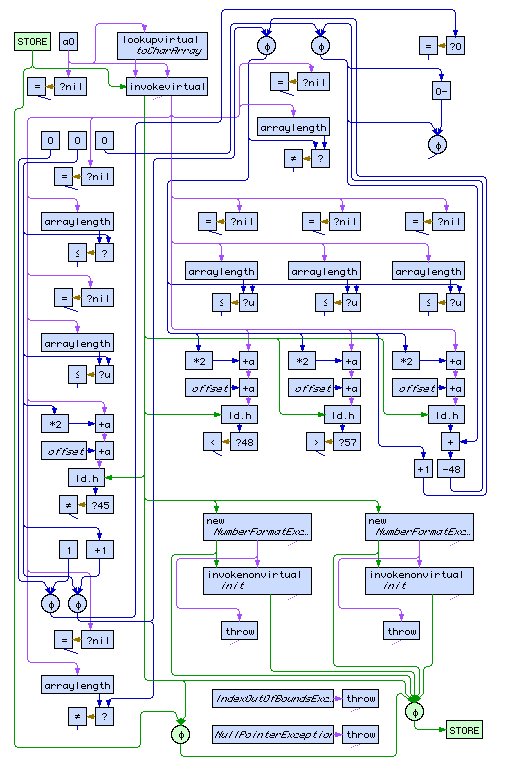

Electrical FireDesignPrimitive Graph FormatExample 1 |
|
To illustrate the primitive graph format we take a look at an example of a Java function, its bytecode representation, and its primitive graph representation.
The Java function is a simple string-to-int parser:
public static int strToNum(String s) throws NumberFormatException
{
char a[] = s.toCharArray();
boolean negative = false;
int i = 0;
int n = 0;
if (a.length>i && a[i]=='-')
{
negative = true;
i++;
}
if (i == a.length)
throw new NumberFormatException();
while (i != a.length)
{
if (a[i] >= '0' && a[i] <= '9')
{
n = n*10 + a[i] - '0';
i++;
}
else
throw new NumberFormatException();
}
return negative ? -n : n;
}
javac produces the following bytecode representation:
.method public static strToNum(Ljava/lang/String;)I
.throws java/lang/NumberFormatException
.limit stack 3
.limit locals 5
aload_0
invokevirtual java/lang/String/toCharArray()[C
astore_1
iconst_0
istore_2
iconst_0
istore_3
iconst_0
istore 4
aload_1
arraylength
iload_3
if_icmple Label1
aload_1
iload_3
caload
bipush 45
if_icmpne Label1
iconst_1
istore_2
iinc 3 1
Label1: iload_3
aload_1
arraylength
if_icmpne Label4
new java/lang/NumberFormatException
dup
invokenonvirtual java/lang/NumberFormatException/<init>()V
athrow
Label2: aload_1
iload_3
caload
bipush 48
if_icmplt Label3
aload_1
iload_3
caload
bipush 57
if_icmpgt Label3
iload 4
bipush 10
imul
aload_1
iload_3
caload
iadd
bipush 48
isub
istore 4
iinc 3 1
goto Label4
Label3: new java/lang/NumberFormatException
dup
invokenonvirtual java/lang/NumberFormatException/<init>()V
athrow
Label4: iload_3
aload_1
arraylength
if_icmpne Label2
iload_2
ifeq Label5
iload 4
ineg
ireturn
Label5: iload 4
ireturn
.end method

The bytecode processor finds the basic blocks and transfers of control in the raw bytecode program to produce the graph above.
That graph is not quite a complete representation of the function because
it does not represent exceptional control flow paths. A number of the bytecodes
(athrow, invokevirtual, invokenonvirtual,
arraylength, and caload) can cause exceptions,
and asynchronous exceptions can also occur. These additional control flow
paths will be represented in the primitive graph constructed below. For
now, each instruction or sequence of instructions is annotated with information
about where exceptions should go. In this graph there are no catch or finally
handlers, so every instruction is annotated with an exceptional path (not
shown in the figure) that goes to the end node.
Caution: The primitive graph below corresponds to an older specification of primitive graphs. The graph below should be corrected for:
aexc node must be the target
of a backward control flow edge, not the source.
end
node should be exception and return edges.
lookupvirtual,
invokevirtual, and arraylength are now comprised
of simpler primitives.
+a primitive.
if control node instead of inside its own primitive.
new
nodes should be system calls.
new
nodes should have outgoing tuple edges instead of pairs of memory and address
edges.
Figure 2. Primitive Graph [level 2 color postscript version]

The complete primitive graph for our sample function is shown in the figure above. Since the graph is fairly complex, its control flow and dataflow layers are shown separately in figures 3 and 4 below.
Figure 3. Primitive Graph's Control Flow Layer [level 2 color postscript version]

Figure 4. Primitive Graph's Dataflow Layer [level 2 color postscript version]
